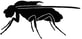
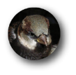
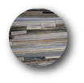
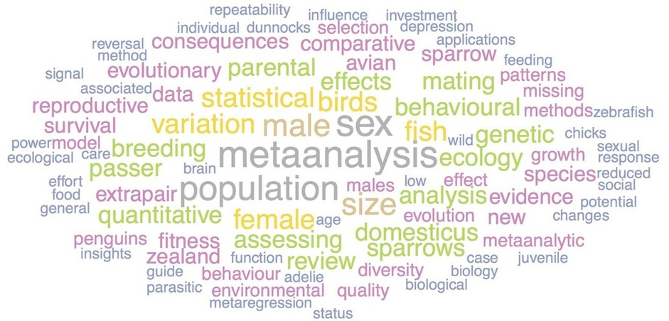

Research
At COSSEE (Centre for Open Science and Synthesis in Ecology and Evolution), we integrate cutting-edge research with open science practices to address fundamental and applied questions in ecology, evolution, and related fields. Under the leadership of Dr. Shinichi Nakagawa and supported by the Canada Excellence Research Chair (CERC) program, we emphasize rigor, transparency, and collaboration to advance scientific discovery. Our work spans life-history evolution, trans-generational effects, evolutionary medicine, environmental change, and eco-toxicology, using interdisciplinary approaches such as behavioral experiments, molecular tools, computational models, Big Data, and research synthesis.
Research Focus
- Research Synthesis Hub: Aggregating and synthesizing global evidence to map knowledge, develop methods, and fill critical gaps.
- Meta-Research Hub: Improving research rigor, addressing biases (e.g., equity, diversity, inclusion), and quantifying replicability.
- Open Science Infrastructure: Building collaborative platforms, AI-driven workflows, and tools to foster transparency and reproducibility.
Core Expertise
- Meta-Analysis & Systematic Reviews
- Advanced Statistics: Multilevel modeling, Bayesian methods, phylogenetics.
- Computational Tools: AI/ML applications, R packages, open-source software.
- Open Science Practices: Pre-registration, reproducible workflows, data sharing.
Current Projects
- Evidence synthesis for PFAS effects on biota
- Meta-analysis on trans-generational effects of parental environments
- Sex differences in thermal plasticity
- Taxonomic and geographic biases in academic literature.
- Development of effect sizes for covariance, skewness, and kurtosis comparisons.
- Phylogenetic multilevel meta-analyses.
- Interactive effects of stress and environmental enrichment on animal behaviour
- Global synthesis of disease prevalence in corals
- Taxonomic biases in academic literature
- Robust inference and reproducibility in ecology and evolution
Past projects
- Meta-analysis of factors affecting judgement bias across animals
- Transgenerational inheritance of environmentally induced phenotype in zebrafish
- Maternal and ontogenetic effects on personality, cognition and metabolism in lizard
- Migration and life history in trout
- Meta-analysis on differential allocation hypothesis
- Extra-pair paternity in house sparrow
- Mating systems in an introduced species – dunnocks
- Maternal condition and sex ratio in mosquitofish
- Mate choice and vocalization in a frog
- Behavioural syndomres in a New Zealand skink
- Multi-dimensional behavioural change in hosts caused by parasites
- Phenotypic plasticity in common bullies
- Trojan sex chromosomes in mosquitofish
- Population genetics of house sparrows
- Nematode mitochondrial genome size and architecture
- Morphology of sex chromosomes in birds
- Genetic basis of variability in honeybee learning
- Molecular mechanisms of memory and learning in honeybees
- Catch-up growth and personality in mosquitofish
- Effects of catch-up growth on metamorphosis in frogs
- Meta-analysis on dietary restriction and longevity
- R-square for GLMM
- A Bayesian comparative method
- Missing data and model averaging
- Repeatability for Gaussian and non-Gaussian data
- Effect size, confidence intervals and statistical significance
Key Research Topics
- Fundamental: Sexual Selection | Mating Systems | Parental Care | Animal Personality | Ageing | Phenotypic Plasticity
- Applied: Evolutionary Medicine | Environmental Change | Eco-Toxicology | Anthropogenic Impacts
- Emerging: Developmental Origins of Health and Disease (DOHaD) | Trans-generational Epigenetic Inheritance | Equity, Diversity, and Inclusion (EDI) in Science | Replicability and Meta-Science
New Directions
- Open synthesis communities for collaborative, real-time evidence aggregation.
- Integration of citizen science and educational outreach (e.g., high school STEM programs).
- Quantifying biases in authorship, funding, and publication practices.
- Replicating/updating 20+ key meta-analyses via DEAR workshops.
- Semi-automated AI workflows for literature screening and data extraction.
- Interactive knowledge maps using research weaving (systematic mapping + bibliometrics).
Experimental Systems/Species
-  Fruit fly (Drosophila melanogaster)
-  House Sparrow (Passer domesticus)
-  Dry lab: literature-based and computer-generated data
- Global partnerships for cross-taxa syntheses (birds, fish, amphibians, invertebrates).
What other species did we work with in the past?
- Birds: Dunnocks (Prunella modularis), Adélie Penguins (Pygoscelis adeliae), Little Blue Penguins (Eudyptula minor)
- Fish: Zebrafish (Danio rerio), Mosquitofish (Gambusia affinis), Common Bullies (Gobiomorphus cotidianus)s
- Frogs: Brown Tree Frog (Litoria ewingii), Red-Eyed Tree Frog (Litoria chloris)
- Reptiles: Eastern Water Skink (Eulamprus quoyii), McCann’s Skink (Oligosoma maccanni)
- Invertebrates: honeybees (Apis mellifera), flour beetles (Tribolium castaneum), earthworms (Eisenia fetida), amphipods (Paracalliope fluviatilis)

A wordcloud based on the titles of our publications (up to 2015)